Input widgets are leaf widgets in the widget tree that typically implement a field where user input takes place. Available input widgets are:
| creation call | screenshot (gtk2) | description |
|---|---|---|
| PCB_DAD_LABEL | 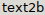 | single line or multi line of plain text, from a string |
| PCB_DAD_LABELF | single line or multi line of plain text, using printf formatting | |
| PCB_DAD_ENUM | 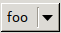 | select one value from a fixed set (typical implementation is a combo box) |
| PCB_DAD_BOOL | checkbox | |
| PCB_DAD_INTEGER | 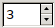 | set an integer value |
| PCB_DAD_REAL | 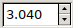 | set a real (floating point) value |
| PCB_DAD_COORD | 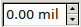 | set a coordinate value |
| PCB_DAD_STRING | 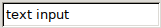 | input single line string value (plain text) |
| PCB_DAD_BUTTON | clickable push button | |
| PCB_DAD_PROGRESS | 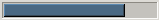 | progress bar |
| PCB_DAD_TREE | 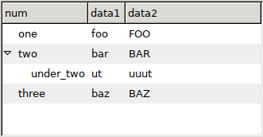 | a list, table or tree of text data |
| PCB_DAD_PREVIEW | | drawing area |
| PCB_DAD_PICTURE | static bitmap image | |
| PCB_DAD_PICBUTTON | static bitmap button |
Draw a label, which is not an input field (unmodifiable by the user). text is copied by the call into a new allocation. The only control text accepts is '\n', which is line break.
Same as PCB_DAD_LABEL() but the text is rendered using printf. Note: printf args, including the format string, shall be in parenthesis, e.g.
PCB_DAD_LABELF(dlg, ("Cats: %d", num_cats))
The user can choose one value out of an ordered list of strings. The list is passed as a NULL terminalte char * array. The value of the enum is an integer index into that array, 0 being the first string.
Typical GUI implementation is a combo box, without text editing.
Ask the user about a boolean value, typically using a checkbox. The value of the bool is an integer which is either 0 or 1.
Ask for an integer value, between a minval and a maxval. The value is an int, which is not guaranteed to be wider than a 16 bit signed value.
Typical GUI implementation is a text entry, often upgraded with small buttons to increase or decrease the value ("spinbox").
Ask for a REAL (double precision floating point value), between a minval and a maxval.
Typical GUI implementation is a text entry, often upgraded with small buttons to increase or decrease the value ("spinbox").
Ask for a coordinate value, between a minval and a maxval. The value is pcb_coord_t.
Typical GUI implementation is a text entry that understands unit suffix, often upgraded with small buttons to increase or decrease the value ("spinbox").
Ask for a single line of plain text input.
The value is a dynamically allocated string.
A push button the user can click on. text is not allocated or copied (shall be a static const string or allocated/free'd by the user).
There is no value, the only interface is the change callback.
Present a progress bar which is not an user input. value is a REAL value between 0.0 and 1.0. When the code changes the value, the GUI makes sure the dialog box is drawn and flushed, because typical use is in a busy loop calculation.
Present a tree-table with cols columns of text objects. When first_col_is_tree is 1, the first column works as a tree, with indentation and/or tree graphics and logics for collapsing/expanding subtrees. If opt_header is not NULL, it is a NULL terminated static const array of header strings describing the table header to be displayed, in as many strings as cols specified.
A special cases:
| case | parameters |
|---|---|
| plain flat list | cols=1, first_col_is_tree=0 |
| tree-only | cols=1, first_col_is_tree=1 |
| table-only | cols>1, first_col_is_tree=0 |
Manipulating the data and the view are both done using special tree-table macros.
Present a drawing area with callbacks to the host code to handle drawing:
| argument | meaning |
|---|---|
| expose_cb | called when (parts of) the preview needs to be redrawn |
| mouse_cb | called on mouse events |
| free_cb | called before the widget is destroyed |
| initial_view_box | set the initial zoom/pan to match the view box specified in drawing units |
| min_sizex_px | widget minimum size in x direction (width), in pixels |
| min_sizey_px | widget minimum size in y direction (height), in pixels |
| user_ctx | opaque pointer that is passed to every callback |
The pointer to a static xpm image is stored in the enumerations field. The image is displayed in a widget without any other decoration.
The pointer to a static xpm image is stored in the enumerations field. The image is displayed in a button tat behaves exaclty as a normal BUTTON in all other regards.
| creation call | screenshot (gtk2) | description |
|---|---|---|
| PCB_DAD_BEGIN_HBOX | 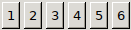 | arrange children widgets in a horizontal list |
| PCB_DAD_BEGIN_VBOX | 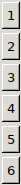 | arrange children widgets in a vertical list |
| PCB_DAD_BEGIN_HPANE | 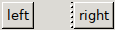 | split the parent box horizontally into two sections; the split ratio is adjustable Note: "left" and "right" are the first and second children (left and right sibling) of the widget tree |
| PCB_DAD_BEGIN_VPANE | 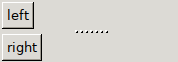 | split the parent box vertically into two sections; the split ratio is adjustable Note: on the screenshot "left" and "right" are the first and second children (left and right sibling) of the widget tree |
| PCB_DAD_BEGIN_TABLE | 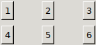 | arrange children widgets into a n*m matrix, allocate each cell the same size Note: on the screenshot the table is set up to have 3 columns |
| PCB_DAD_BEGIN_TABBED | 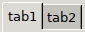 | create a "tabbed notebook" view, each children is a new tab |
hbox, vbox and table share a few common compflags, that are defined in hid_attrib.h, pcb_hatt_compflags_t. The explanation of what each flag does can be found there. The most commonly used ones are PCB_HATF_FRAME, PCB_HATF_SCROLL, PCB_HATF_EXPFILL.
If PCB_HATF_EXPFILL is set, the given box tries to expannd and fill, using up all available space in its parent widget. If multiple sibling boxes have this flag set the behaviour is unspecified; some HIDs may prefer to grow only one box, others may evenly distribute the avaialble space among boxes. If this flag is not set, the box uses only as much space as its children widgets require.
Arrange children widgets in a horizontal or vertical row.
Expect exactly two child widgets. Arrange them horizontally, with a widget in between them that allows the user to change the space allocation between the sides.
Expect exactly two child widgets. Arrange them vertically, with a widget in between them that allows the user to change the space allocation between the sides.
Place children widgets in a table with cols columns. Widgets are placed by filling up rows first. If there are not enough widget to finish the last row, rightmost columns are left empty.
The table is homogenous, which means the cell size is the same for all cells and is either determined by the size of the smallest cell content or if the table fills in a larger widget space than its minimal size, then cell space is evenly distributed.
Creates a "tabbed notebook": each child widget ends up on a new page, there is only one page shown at a time and there is a GUI way to switch page (the tab). The list of tab names is passed as tabs, as a NULL terminalte char * array. The number of tab names must match the number of children widgets. The value of is an integer index into that array, 0 being the first tab.
If compflag includes PCB_HATF_HIDE_TABLAB, the tab graphics are hidden - no tab labels printed and the user can not click to switch tab. This is useful for dialog boxes where the code needs to present different tabs using the same screen estate.
If compflag PCB_HATF_LEFT_TAB is set, tab labels are presented in a vertical row on the left side of the widget. This is useful if there are a lot of tabs with short names.
Create a new widget by duplicating an existing one. attr is the widget ID of the existing widget. If the widget being duplicated is a BEGIN*, it will need a corresponding PCB_DAD_END.
The raw macro call is PCB_DAD_SET_VALUE, which can change (overwrite) a named field of the current (last created) widget. The following table lists high level macros that usually call PCB_DAD_SET_VALUE on a specific field.
| name | description |
|---|---|
| PCB_DAD_COMPFLAG(table, val) | set all compflags |
| PCB_DAD_MINVAL(table, val) | change the minimal value for numeric input |
| PCB_DAD_MAXVAL(table, val) | change the maximal value for numeric input |
| PCB_DAD_DEFAULT(table, val) | set the default (initial) value |
| PCB_DAD_MINMAX(table, min, max) | hange both the minimal and the maximal value for numeric input |
| PCB_DAD_CHANGE_CB(table, cb) | cb is a function that shall be called upon any change to the widget value |
| PCB_DAD_HELP(table, val) | set the help text (typically presented as a tooltip) |
There is a dad() action in the dialogd plugin that exposes all the above macros. The dialog table ID is am arbitrary unique string and commands are the macro names without PCB_DAD, written in lowercase.
Please refer to scripting rosetta project for examples. An example of a typical small dialog box is the unit conveter script.